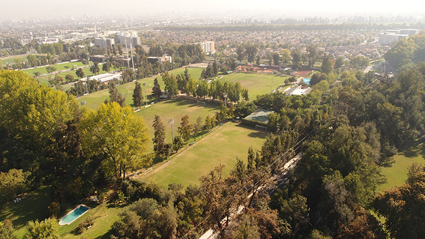
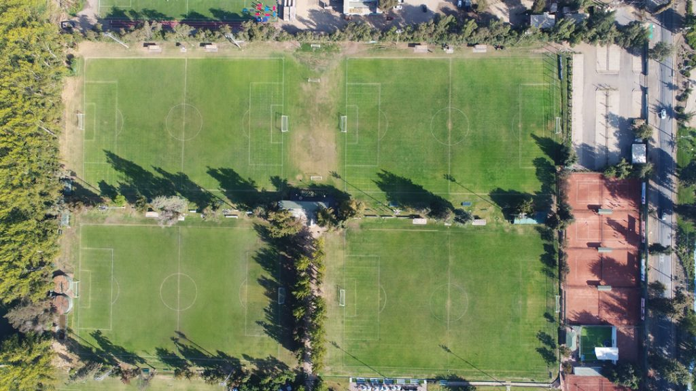
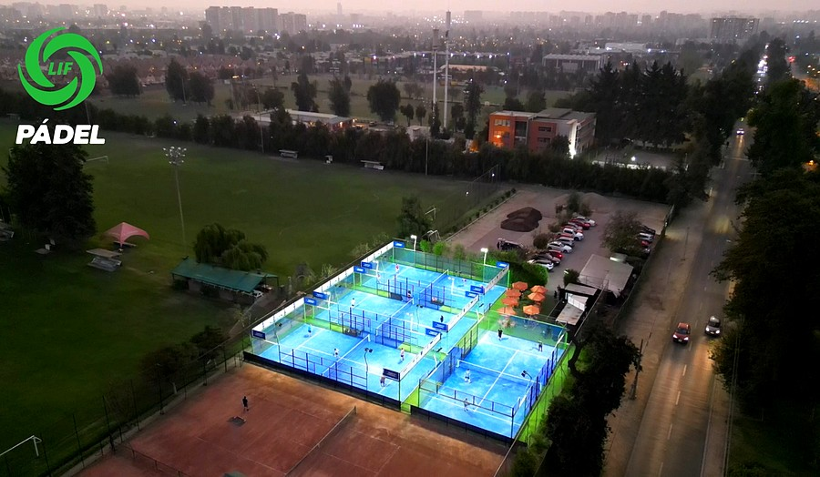

Nuestra Historia
El primer paso de La Liga corresponde al año 1936, cuando un grupo de alumnos de los Padres Franceses
liderados por don Sergio Eguiguren Ortúzar, se reunió para formar el club “Tigres”. Sin ser buenos para el
fútbol, su energía y ganas de jugar los hizo formar este club que debió esperar un año para encontrar
adversarios. Tras la paciente espera, en 1937 recibieron la invitación de un grupo de socios del Stade
Francais, para jugar contra ellos, allí conocieron a “Coyotes”, cuyo capitán era don Arturo Paredes Pizarro,
con esto, La Liga comenzó a tomar forma, hasta que en mayo de 1938 se fundó la asociación deportiva “Liga
Independiente de Fútbol”. Años después, en 1976, compraron un terreno agrícola, dando inicio a las
instalaciones de un espacio de real importancia para la participación de sus socios.
Infraestructura
Actualmente nuestra liga cuenta con 5 canchas de Fútbol, donde trabajan Arbitros, turnos y cancheros
dispuestos a entregar la mejor experiencia para jugar. También tenemos canchas de baby futbol, un casino,
5 canchas de tenis de superficie de arcilla, 5 quinchos aptos para la realización de asados y actividades
de espacimiento, piscina y más de 300 estacionamientos.

Actualmente la Liga cuenta con 5 canchas de Fútbol, en las que juegan las series Escuelita para niños desde
los 5 años, Peque, Mini, Infantil e Intermedia, las que participan en un torneo interestadio de fútbol
infantil. Además el campeonato oficial está conformado por 17 clubes que compiten en las series Junior,
Senior, Super Senior, Dorados y Diamantes.
Asimismo, con el objeto de hacer de la Liga un espacio familiar, se han construido 2 piscinas, 8 canchas de
tenis, pérgolas, Club House con salas de reuniones y de estar, restaurante, bar, comedores, sauna para damas
y
varones, camarines y oficinas administrativas. También se han creado instancias para realizar actividades
recreativas. En suma, una tremenda infraestructura, que sólo tiene significado, que sólo tiene una razón de
ser, si están ustedes, sus socios y familias, participando activamente en ella.
